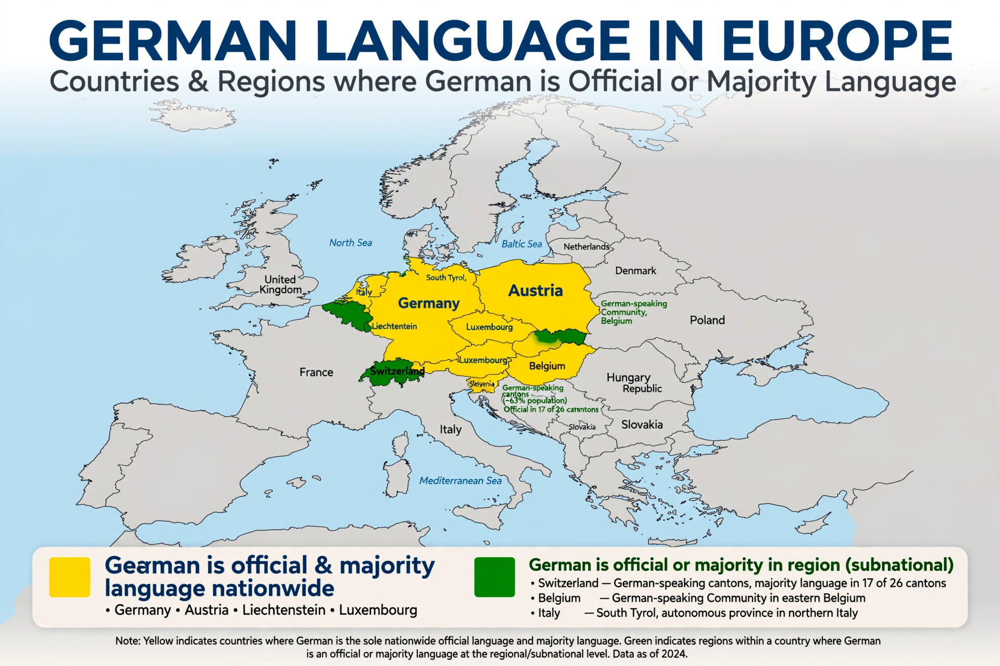

German language

Native to: Germany, Austria, Switzerland, Belgium, Luxembourg, Liechtenstein
Native speakers: c. 95 million
Language family: Indo-European → Germanic → West Germanic
Writing system: Latin (German alphabet)
Official language in: 6 countries; an EU official language
German (Deutsch, pronounced [dɔʏtʃ]) is a West Germanic language of the Indo-European family, spoken chiefly in Central Europe. It is the most widely spoken first language in the European Union, with about 95 million native speakers, and is an official language of Germany, Austria, Switzerland, Belgium, Luxembourg and Liechtenstein.
History
German descends from the continental West Germanic dialects reshaped by the High German consonant shift (c. 6th–8th centuries), which distinguishes it from English and Dutch — compare English apple with German Apfel, or ship with Schiff. Martin Luther's Bible translation (1522–1534) helped standardise written German across the dialect regions. The Brothers Grimm began their monumental Deutsches Wörterbuch in 1838, and Konrad Duden's orthographic dictionary (1880) standardised spelling; a major spelling reform followed in 1996.
Grammar
German is famous for its four-case system (nominative, accusative, dative, genitive), three grammatical genders, verb-second word order in main clauses, verb-final order in subordinate clauses, and long compound nouns such as Donaudampfschifffahrtsgesellschaftskapitän. All nouns are capitalised. See Grammar.
See also
English language · Indo-European languages · Dictionary · Etymology